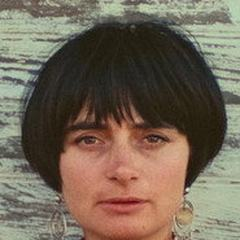

1928'de Brüksel'de doğan, 2019'da Paris'te ölen Varda, Fransız Yeni Dalgası'nın öncüsü olmadan önce fotoğrafçıydı. Sıcaklık, merak ve güçlü bir feminist bakışla kurmaca ile belgesel arasında özgürce gezindi.
Filmografi
- La Pointe Courte (1955)
- Cléo from 5 to 7 (1962)
- Le Bonheur (1965)
- The Creatures (1966)
- Lions Love (1969)
- Daguerréotypes (1976)
- One Sings, the Other Doesn't (1977)
- Mur Murs (1981)
- Documenteur (1981)
- Vagabond (1985)
- Jacquot de Nantes (1991)
- The Gleaners and I (2000)
- The Beaches of Agnès (2008)
- Faces Places (2017)
- Varda by Agnès (2019)